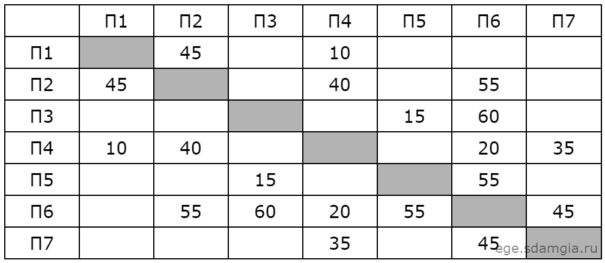
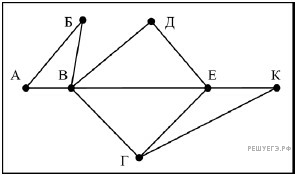

Самостоятельное решение 1 задания КЕГЭ по информатике
Задание №1
На рисунке справа схема дорог Н-ского района изображена в виде графа, в таблице содержатся сведения о длинах этих дорог (в километрах). Так как таблицу и схему рисовали независимо друг от друга, то нумерация населённых пунктов в таблице никак не связана с буквенными обозначениями на графе. Определите, какова длина дороги из пункта Г в пункт Е. В ответе запишите целое число – так, как оно указано в таблице.


Ответ:
Правильный ответ = 40
Задание №2
На рисунке схема дорог Н-ского района изображена в виде графа, в таблице содержатся сведения о длинах этих дорог (в километрах). Так как таблицу и схему рисовали независимо друг от друга, нумерация населённых пунктов в таблице никак не связана с буквенными обозначениями на графе. Определите длину дороги из пункта Б в пункт Д. В ответе запишите целое число.